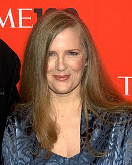

The youngest of four children, Suzanne Collins was born on August 10, 1962, in Hartford, Connecticut. The daughter of an Air Force officer, Collins moved a considerable amount during her childhood, living in places like New York City and Brussels.
Collins graduated from the Alabama School of Fine Arts in Birmingham in 1980 as a Theater Arts major. She completed her bachelor of arts degree from Indiana University in 1985 with a double major in theater and telecommunications. In 1989, Collins earned her M.F.A. in dramatic writing from the New York University Tisch School of the Arts.